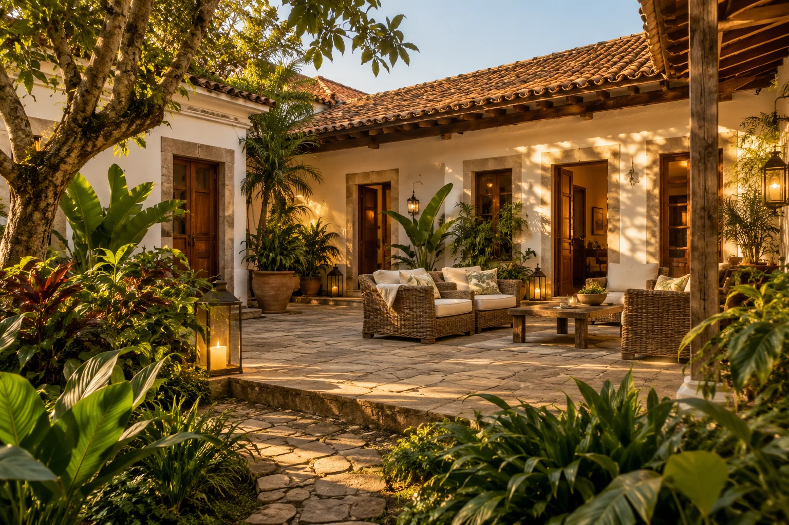

A história
As origens e a personalidade do hotel, contadas pelos seus responsáveis.
O HOTEL
Hotel Terra D’Ouro

UM ESPAÇO PARA SUA HISTÓRIA
Esta página foi pensada para contar a história do Hotel Terra D’Ouro com a voz de quem cuida dele. Aqui, o visitante conhecerá a essência do hotel, sua equipe e o que torna cada estadia especial.
Na versão final, este espaço receberá o texto aprovado pelo hotel, acompanhado de fotografias reais e informações sobre a experiência oferecida.
Converse com a equipe ↗O QUE QUEREMOS APRESENTAR
As origens e a personalidade do hotel, contadas pelos seus responsáveis.
Quartos, áreas comuns e detalhes registrados em fotografias reais.
Serviços e diferenciais confirmados, para ajudar o visitante a escolher.
A VIAGEM COMEÇA COM UMA CONVERSA